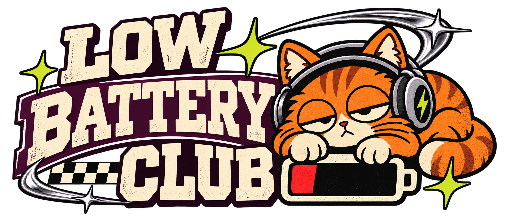

This funny custom beanie pairs a sleepy orange cat with a low-battery punchline, racing-inspired accents, and bold collegiate lettering. The graphic brings a little personality to an everyday knitted winter hat and makes a lighthearted cat lover gift.
A personalized winter hat with streetwear energy
“Low Battery Club” turns the familiar cold-weather beanie into a playful statement piece. Varsity lettering, a checkerboard detail, chrome-like highlights, and lime starbursts nod to Y2K streetwear while keeping the cat and joke easy to recognize.
Made for the folded front cuff
The VIBEYA custom knitted beanie is made from 100% acrylic knit (300 g) and comes in Black, Red, or Medium Gray in One Size. The artwork is printed on the folded front cuff only; the crown and back remain plain knit. The cuff is 2.8 inches high, so keep custom graphics bold and readable at a compact size.

Create your own custom beanie
Looking for a personalized beanie or custom winter hat with your own idea? Browse VIBEYA products, choose the knitted beanie, then open the design studio to start with a prompt or remix this cat graphic. Pick a color, adjust your design for the front cuff, review the product preview, and place your order when it looks right.
- Choose the custom knitted beanie and select Black, Red, or Medium Gray.
- Describe a new design or remix this Low Battery Club graphic in the design studio.
- Check the front-cuff preview, add your finished beanie to the bag, and complete checkout.
Create a compact custom beanie front-cuff graphic called “LOW BATTERY CLUB”: a sleepy orange cat wearing headphones leans over a nearly empty battery icon, with bold cream varsity lettering, deep plum outlines, subtle chrome accents, a small checkerboard detail, and a few vivid lime stars. Make it playful Y2K streetwear with a clean, high-contrast print that stays readable on a black, red, or medium-gray knitted beanie. Design for the folded front cuff only; no full-hat pattern, no embroidery, no mockup.
Frequently asked questions
Where does the design print on the beanie?
The custom artwork prints on the folded front cuff. The rest of the beanie stays plain knit.
What colors and size are available?
Choose Black, Red, or Medium Gray. The product is One Size.
Are the gallery photos the finished product?
The images show styled product previews in everyday settings. Knit texture, print scale, and color can vary slightly on the finished custom beanie.